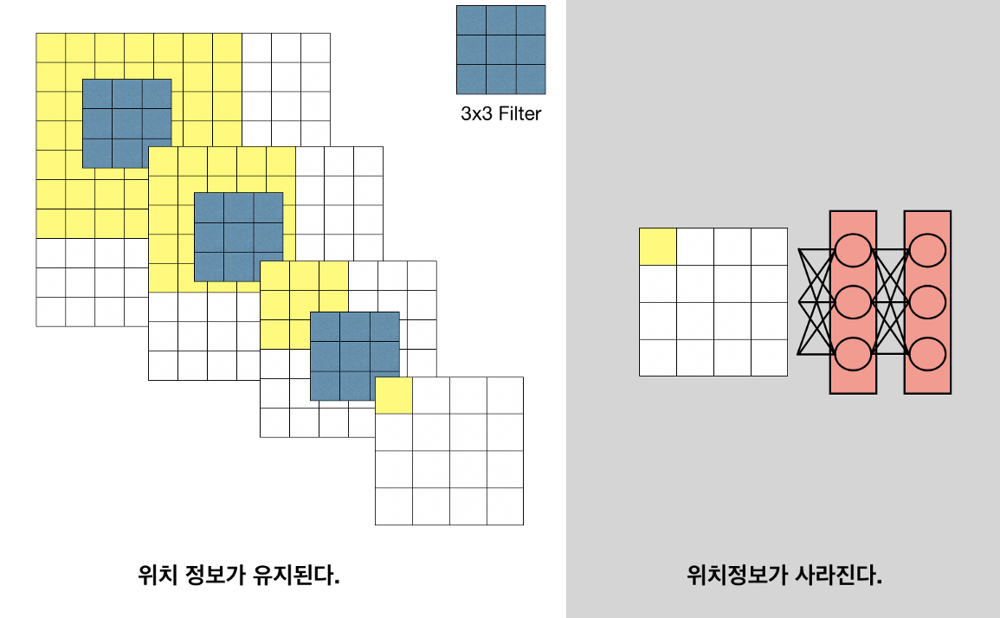
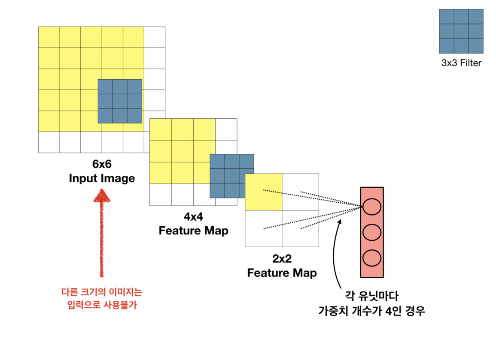
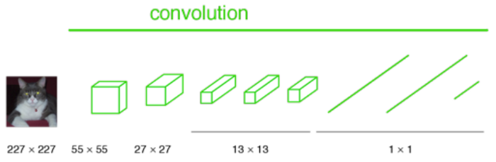
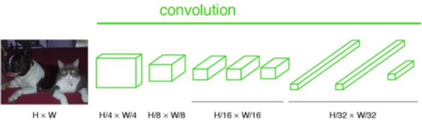
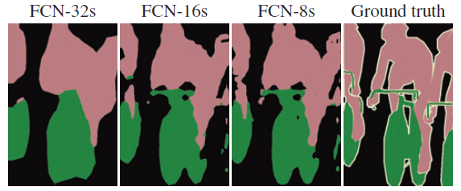
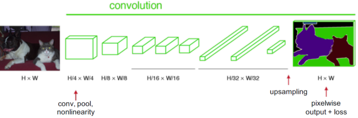

FCN - CVPR 2015¶
Title: Fully Convolutional Networks for Semantic Segmentation
Review By: Yejin Kim (가짜연구소 논문미식회 2기)
Edited by: Taeyup Song
Summary¶
Fully Connected Layers → 1x1 Convolutional layers : input image 크기에 제약이 없다.
input image에 비해 feature map은 coarse한 정보들을 담고 있다 → upsampling
모든 layer가 convolution layer로 구성된다.
마지막 layer의 prediction만 사용하지 않고 lower layers의 predictions와 fusion을 함으로써 Deep feature와 accurate segmentation가 가능해진다.
Motivation and Problem statement¶
Fully Connected Layers의 한계
위치 정보의 소실

입력 이미지 크기의 고정

Fully Connected Layers를 사용할 경우 input image의 크기는 항상 일정해야 하므로 항상 부분적으로 image를 잘라내야 한다.
Proposed Solution¶
Architecture

Convolutioanl Neural Network에서는 마지막에 Fully Connected Layers가 있으며 이로인해 Location Information을 얻기가 어렵다.

따라서 Fully Connected Layers가 1x1 Convolutional Layers로 대체되었다. 하지만 여전히 output의 크기가 input 크기와 일치하지 않는다.

Semantic Segmentation의 목표는 pixelwise prediction이기 때문에 Upsampling을 통해 output prediction의 크기를 확대하여 input과 동일하게 만들어준다.
Improvement of segmentation

Figure 1. Refining fully convolutional nets
제일 왼쪽 사진이 위 architecture의 output prediction을 이용한 segmentation의 결과물이다.
결과물이 coarse한 이유는 작아진 output을 upsampling을 통해 확대했기 때문이다. 더 자세한 spatial location information을 위해 layer 개수를 줄여버리면 deep feature를 얻기 힘들어지기 때문에 여기서 tradeoff 가 필요하다.
더 정밀하고 상세한 segmentation을 얻으면서 layer 개수는 유지하기 위해 이 논문에서는 final layer와 lower layers의 output이 함께 사용됐다.

FCN-32s: final layout의 output prediction을 stride32로 upsampling해줌
FCN-16s: fianl layout의 output prediction을 stride2로 upsampling + pool4 layer의 output prediction → 결과물을 stride16로 upsampling
FCN-8s: finaly layer와 pool4의 output prediction의 합 + pool3의 output prediction → 결과물을 stride8로 upsampling
Lower layer의 output prediction을 이용하여 final prediction을 계산하므로써 점점 더 정밀한 segmentation이 가능함 (Figure 1 참조)